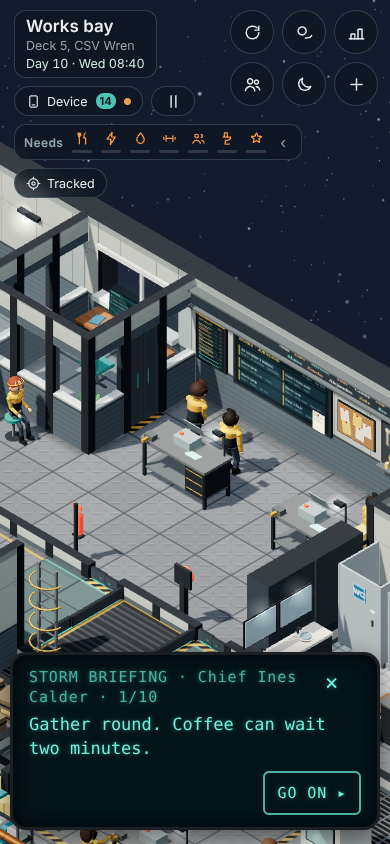
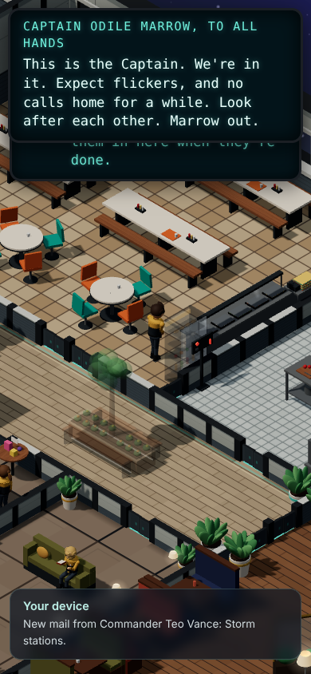
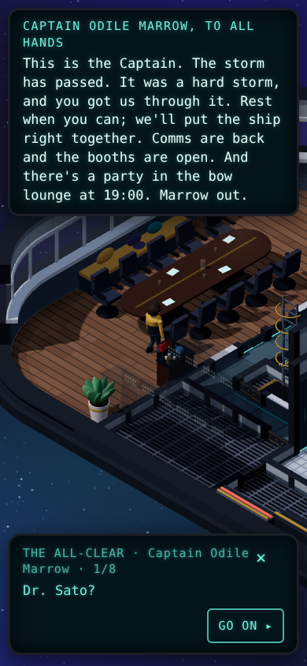
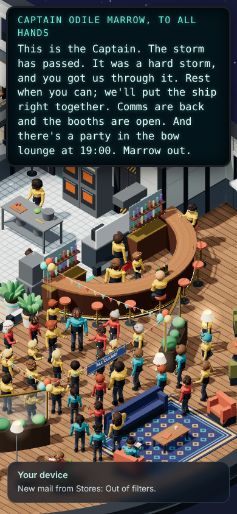

Ship-wide events: the plan
claude/events-plan, from build 0.64.2. Planning only: the game hasn't changed. Your decisions are now in design-doc.md ("Ship-wide events"). Earlier versions and the reviews are in git (claude/events-plan-review).- Four events before the career ends (Day 26), plus a finale:
- a new one-day event on Day 6, your first Saturday aboard;
- the ion storm, moved a day later to Days 11-15;
- comet viewing on Tuesday Day 16;
- the diplomatic visit as a weekend finale, Days 26-30.
- I took the Day 6 event to be your "one more short one", not one on top of it. New question 1 checks this.
- For Day 6 I recommend "Crossing the Line". The Wren crosses into the Veyli reach. The whole crew gathers on the plaza to welcome everyone crossing for the first time, you included, and then there's a big supper in the mess. It's two big crowd moments, it's gentle, and it sets up the Veyli visit at the end. Two other candidates are in section 3.
- More big crowds in every event, as you asked after the playtest: a candlelit supper in the mess in the middle of the storm, and the whole crew lining the shuttle bay to greet and see off the Veyli.
- The ready room and the Captain's table stay separate, as you chose. Each is spaced out so that nothing lands on a test day and there's no more than one of the Captain's scenes per day (section 1).
- Build order: the shared base, then the ion storm, then the Day 6 event, then the comet, then the visit. Each is built switched off and switched on after your review. About 36-45 build turns, plus the head writer's lines.
- 7 new questions, at the bottom.
1. The calendar
Ship days 0-30. Day 1 is a Monday, and the faded days are weekends. The career beats in grey italics are Pillar 5's, which come after the events, so the event calendar keeps those days clear in advance.
Day by day (the event calendar, F0)
| Day | What happens | Big crowd? |
|---|---|---|
| Fri 5 | Day 6 event, warning: Vance's Mail at 18:00 ("Tomorrow we cross the Line"). Crew talk about it at the new-hands tea (18:40). | |
| Sat 6 | Day 6 event: the ship's horn and gold hull lights at 17:00 (felt everywhere), the Captain's short address, the plaza ceremony 17:00-17:45 and the Line supper in the mess 18:15-19:30. It fits between the cook-along (ends 16:30) and film night (20:00). You're off duty. | 2 |
| Sun 7 | Afterglow: your Line certificate on your shelf, a plaque on the plaza, and talk about it at "one week aboard" (17:15). | |
| 9-10 | Today's career: your test job (Day 9) and the Officer summons (Day 10, 11:00; the move at 17:00). No event. | |
| Thu 11 | Storm warning (06:00), the first team job (09:30), then Calder's storm briefing at 13:30, after tea. The storm jobs go up when the briefing ends, and the one you chose is held for you. Nothing from the storm 17:00-18:30, around the officer ceremony (17:15). | |
| Fri 12 | The front, 14:00: jolt, lights, the Captain's address. The bow lounge, the call booths and the rec deck close. Traditions pause. | |
| Sat 13 | Escalation: blackouts, storm stew, the surge at 11:20. New: the lantern supper, 18:00-19:30, the mess by emergency light (everyone who's staying in comes). | 1 |
| Sun 14 | The all-clear, 10:00 (the Captain and Calder come in on their day off, as anyone would). Your commendation letter comes at the all-clear. The rec deck and booths reopen, with a rush on the booths. The party in the bow lounge, 19:00. Rec talent night (19:30) moves a week. Afterglow from 22:00. | 1 |
| Mon 15 | Afterglow, and the debrief Mail at 18:00. Pillar 5: Tier 3 test, so no summons today. | |
| Tue 16 | Pillar 5: Senior Officer (ready room, the suite). Comet at 21:30: the observatory and the bow lounge windows. | 1 |
| Wed 17 | Pillar 5: the toast at a Captain's table. | |
| Thu 18 | The commendation summons: the Captain's ready room at 11:00, the first free day after the storm. | |
| Sat 20 | The regular Captain's table (19:30, every 4 weeks), for the commended. | |
| 19-21 | Pillar 5: night shifts (nights of 19 and 20); Day 21 the new junior arrives (your answer 9; built with Pillar 5). | |
| Mon 22 | Vance's memo: the Veyli visit is next week's business. Later, Pillar 5's Monday briefing takes this over. The bridge invite stays tied to the storm (question 7). | |
| Fri 26 | Pillar 5: Calder's question. Visit warning: Vance's Mail that evening, and weekend jobs. | |
| Sat 27 | The greeting, 10:00: the crew line the shuttle bay as the Veyli come aboard. | 1 |
| Sun 28 | The formal dinner, Captain's quarters (small; Seniors get a seat). Lieutenant Holt and a delegate clash. | |
| Mon 29 | The gift exchange (observation room), then the farewell, 10:00, in the shuttle bay. | 1 |
| Tue 30 | Afterglow: the Veyli cord sculpture in the bow lounge, and the debrief. |
Who's on shift was checked in the game. The Captain, Calder and Sato work weekdays. Vance is off Wednesdays and Thursdays. Brennan is off on Day 6. The Day 6 event and the storm's Sunday need people on their day off, so F0 lets an event call in its cast. Pillar 5's beats (in italics) go into F1's list of reserved days now, so the events already steer around them before they're built.
How the five Captain's scenes are spaced (your answer 8: keep them separate)
- One of the Captain's scenes a day at most, and none on a test day: that's the career-beat guard (F1).
- Day 14: the commendation letter at the all-clear.
- Day 15: nothing (the Tier 3 test).
- Day 16: the Senior Officer scene in the ready room.
- Day 17: the toast.
- Day 18: the commendation summons in the ready room.
- Day 20: the regular Captain's table.
- The missed-shifts talks follow the same rule.
- Until Pillar 5 is built, Days 15-17 are just held free, so the summons still comes on Day 18.
- For Pillar 5: Vance is off on Day 17, the toast's evening. That needs looking at when it's built.
The career dates, and the steady, busy and slow players
- The career ends on Day 26, the same day for a steady and a busy player, because each step has a first possible day. Today's game has the Officer promotion (Day 10), and Pillar 5 steps 5-6 add Senior Officer on Day 16 and Engine Specialist on Day 23. Pillar 5 now comes after the events, so the event calendar holds its days in advance (F1), and steps 5-6 fit around the events' fixed days.
- Day 26 is a target: Pillar 5 still needs "not before" days for its two later tests, and a reputation pace a player can keep up with.
- A slow player becomes an Officer around Day 29. Events go by the calendar (your answer 5), with small parts that depend on rank.
- A player who skips work is let go on Day 20, so the visit never comes for them.
2. The ion storm: what changes (your answers)
The audit from version 2 still stands: 13 items, checked by the reviewer. The storm runs today, but it was built before most of the game. Your answers decide how it's fixed:
- Dates: one day later and a shorter afterglow (Days 11-15), with the hours of the Day 11 team job and ceremony kept free.
- Your help counts:
- fitting the ballasts shortens the blackouts;
- taking the batteries up keeps the bridge fed;
- helping with a call-booth rota shortens the queue.
- The rec deck: its first all-hands gets its own date, so it no longer moves when the storm does. The rec deck closes from the front to the all-clear.
- Your commendation comes at the all-clear, and the summons is spaced out as shown above.
- New: the lantern supper on the Saturday evening, a big crowd in the mess by emergency light.




The 13 update items (from version 2, with your answers)
- It lands on your promotion: moved to Days 11-15, with the career-beat guard (F0, F1).
- The 89 storm lines never play: phase notes (F2).
- Nothing you do changes the result: prep jobs and help move the threads, left alone it's bumpy, and the blackout odds are tuned so a ship at full power comes out smooth (your answer 6).
- The device misses meetings, Tracked offers places that are closed, and there's no status line or Record entry (F3).
- Skips and reloads lose phases and meetings (F4).
- Calls home are blocked only on the front day, and for any event: fixed so they read "comms down" (F8).
- There's no proper "event day" for puzzles and incidents:
eventDay(d)becomes true only for the front, the escalation and the all-clear (F1). - The rec deck is tied into the storm: its first all-hands is unhooked and it closes during the storm (your answer 7). Blackouts still skip the rec deck (the lead's earlier call).
- Your briefing choice never holds a job: the jobs now go up after the briefing.
- The Captain's banner covers the HUD on phones (the HUD seat).
- Small parts by rank (F5; the head writer writes the lines).
- The ready room and the Captain's table: kept separate and spaced out (your answer 8).
- Small things: old placeholder code, the framed menu's prop, a reload replaying the jolt, too many traditions on the party evening, and draw calls in Deck 4's common room at 454 (budget 450).
3. The new Day 6 event: three candidates
A gentle first taste of a ship-wide event, a week after you arrive: on Saturday, your first day off, with nothing in the career that day. It's one day long with no score, like the comet. It teaches the event pattern (the crew talk about it first, then Mail, then the Captain, then a gathering, then talk afterwards) before the storm.
A. Crossing the Line (new, recommended) · about 3-4 turns
- What it is: the Wren crosses into the Veyli reach, the first new border in months. An old spacers' custom welcomes everyone crossing for the first time: you, the new hands from Friday's tea, and anyone who's never been this far out.
- Warning (Friday 18:00): Vance's Mail, and talk at the new-hands tea. Crew ask "first crossing?" when you tap them.
- The moment (Saturday 17:00, felt everywhere): the ship's horn sounds on every deck and the hull lights turn gold for an hour. The Captain makes a short address.
- Big crowd 1: the ceremony on the plaza, 17:00-17:45, with about 50 crew. The first-timers are called forward. The Captain reads the old oath, and you get one reply to choose (proud, nervous, joking). Then the "dunking": a mug of Brennan's famously awful Line punch.
- Big crowd 2: the Line supper in the mess, 18:15-19:30, about 60, with an extra batch and a cake from the galley crew (Brennan is off duty that day).
- Afterglow (Sunday): your Line certificate on your shelf (a keepsake), a small plaque on the plaza with the date, and crew retelling who pulled the worst face. "One week aboard" picks it up.
- Touches: the Commons (plaza, mess), the galley's extra batch, the hull lights and decorations. No machines and no strain.
- Reuse: gatherings, the address, the meeting panel, decorations, the cake, keepsakes, and the big-crowd spots on the plaza (71). New: the gold hull-light state, the oath scene, a plaque prop, and the head writer's lines.
- Why: it's the biggest crowd and it's about you, the newcomer. It costs the least, and it plants the Veyli for the finale.
- Risks: it's a ceremony rather than a "phenomenon". Up to 60 people on the plaza needs a draw-call check (crowd size barely moves draw calls today). Bow lounge traditions on Saturday aren't affected.
B. Power surge (from the parked list) · about 4-5 turns
- What it is: on Saturday at 14:00 a junction on Deck 6 trips, and Decks 4 and 5 go dark until about 18:00. Engineering's weekend crew fix it. You can hand out lamps, a Junior's job.
- Big crowd: everyone ends up in the lit Commons, and the galley crew put on a "dark supper" in the mess (about 60).
- Reuse: the storm's blackouts and its jobs. Risk: a power event five days before the storm takes away some of the storm's surprise, and you'd meet the blackouts twice in a week.
C. Letters from home (new) · about 3-4 turns
- What it is: the Wren passes a relay buoy for half a day, and a backlog of messages from home arrives. The call booths are busy all day.
- Big crowd: a letters evening in the bow lounge, crew reading bits aloud, with photos on the screen (about 40).
- Why: it shows you the call booths just before the storm closes them.
- Risks: the "letters evening" was scratched once before (design doc, "Calling home"), and calls home are limited to one a day.
4. The comet and the visit (your answers 3 and 4)
Comet viewing · Tuesday Day 16, 21:30 · about 2-3 turns
- Sato's Mail at 08:00.
- At 21:30 the comet is in every window.
- Two gatherings: the observatory and the bow lounge windows (about 25).
- It fades around 22:30.
- Afterglow: a crew sketch pinned up for a week.
- One day long, no score.
- Tiles night and Knit and natter end at 21:30, so neither is cancelled. On Pillar 5's calendar this is your first night in the Senior suite, which has a window.
- Build notes: the gatherings list is built when the game loads, so the comet's gatherings must be registered for Day 16. The sky streak exists only while it's on, so the "off" tests stay pixel-identical.
The diplomatic visit, a weekend finale · Days 26-30 · about 9-11 turns
- Day 22: Vance's memo, the visit is next week's business. Later, Pillar 5's Monday briefing takes this over.
- Fri 26: the warning after Calder's question, with weekend jobs.
- Sat 27, 10:00: the greeting. Big crowd: the crew line the shuttle bay (up to 60 of its 124 spots).
- Sun 28: one formal dinner (small, Seniors seated).
- Mon 29, 10:00: the gift exchange, then the farewell. Big crowd again in the bay.
- Tue 30: the afterglow and the cord sculpture.
- Threads (built): dinners late, cold cabins, no herbs, discourtesy.
- New to build:
- guests escorted between decks;
- a Veyli colour and robe variant;
- the dinner as a meeting with choices;
- shortening it from about 8 days aboard to 3;
- everything on the storm's list again.
- Risks: it runs past Day 26, on purpose. Guest routines are new. Draw calls at the dinner on Deck 1. If the Day 6 event is Crossing the Line, the Line ceremony and the Veyli greeting should look different from each other.
5. Shared base, build order and size
The base (F0-F8), the order, and the turns
| Piece | Turns | |
|---|---|---|
| F0 | The event calendar: the fixed days above (Day 6 event, storm Day 11, comet Day 16, visit warning Day 26), one main event at a time, and an event can call in off-duty people. Its gatherings are registered at load. | 1-2 |
| F1 | eventDay(d) and the career-beat guard: today's beats (test Day 9, summons and move Day 10, team job and ceremony Day 11) plus Pillar 5's beats reserved now (Days 15-26). This includes "one of the Captain's scenes a day, none on a test day", and the bridge invite tied to the storm. Pillar 5 later reads the same list. | 2-3 |
| F2 | Phase notes, so crew lines and chatter react. | 1 |
| F3 | On your device: meetings in the Schedule and Tracked, closed places hidden, the Ship status line, the Record. | 2 |
| F4 | Safe through skips and reloads: every phase replays, and meetings come back. | 2 |
| F5 | Small parts by rank (the summary by Mail to everyone else). | 1 |
| F6 | Dev mode hooks: start any event (even one switched off) at any phase, end it, see its threads. Dev mode comes first in your new order, so these go straight in. | 1 |
| F7 | One events check driven by each event's data. It includes jumps, reloads, casts, big-crowd draw calls, and the storm scenes in perf_check. | 2-3 |
| F8 | "Comms down", read by the call booths. | 1 |
| Order (after Dev mode, the playtest patch and the Talk-a-while pack) | Turns |
|---|---|
| 1. Shared base F0-F8 | 13-16 |
| 2. Ion storm update (with the lantern supper) | 9-11 |
| 3. The Day 6 event (Crossing the Line) | 3-4 |
| 4. Comet viewing | 2-3 |
| 5. Diplomatic visit (finale) | 9-11 |
| Total | about 36-45, plus the head writer's lines |
Why the storm comes first even though Day 6 comes earlier in the game: you asked for it, and the storm is where the shared base gets proven. The Day 6 event then reuses everything and costs little. Each event is built switched off, tested in Dev mode, then switched on after your review. Pillar 5 steps 5-6 come later and read F1's list of reserved days.
6. Questions for you (new)
Pick an option and add a comment if you like. My recommendation is marked. Your earlier answers are recorded in design-doc.md.
7. Parked for later (kept on record)
Out of scope but never deleted. They're marked parked in design-doc.md, and each full breakdown is in plans/pillar3-plan.md.
The parked events, in order
| Event | Kind | In one line | pillar3-plan.md |
|---|---|---|---|
| Crew rotation day | Short | Five leave and five arrive, with goodbyes in the lounge. Its traditions already run from Day 34. Your answer 9 adds one small arrival on Day 21, built with Pillar 5. | line 396 |
| Something in the garden | Main | A creature eats the crops. Traps and a garden watch follow, and it becomes the ship's pet. | line 350 |
| Power surge | Short | A Deck 6 junction trips and two decks go dark (candidate B for Day 6). | line 393 |
| Shipboard illness | Main | The infirmary fills and sick crew stay in their bunks, so more jobs come to you. | line 358 |
| Founders' Day festival | Short | The whole crew on the plaza: the big-crowd test. | line 392 |
| Nebula drift | Main | Colour fills every window. The sensors overload, and the crew sleep badly but chat more. | line 365 |
| Late supply shuttle | Short | Rationing, a bland menu, a busy machine shop. | line 395 |
| Salvage | Main | The Tern flies out to a derelict, and the hold fills with odd finds. | line 373 |
| A Veyli vessel needs help | Short | Works sends parts, and a Veyli engineer comes aboard. | line 394 |
| The déjà vu day | Main | One day replays, and what you change the second time counts. | line 381 |
Notes for the builders, the reviewer and the lead
- Checked in 0.64.2:
- Day 6's traditions (long breakfast, harvest, sowing, garden hour, Tiles ladder, cook-along until 16:30, film 20:00, observatory 21:15): 17:00-19:30 is free.
- Day 14's (talent night 19:30, Lap of the Wren 20:30, Sunday table 18:00-19:00).
- Rotas: the Captain, Calder, Sato and Holt are off at weekends, Brennan on Day 6, and Vance on Days 11 and 17-18.
- Torres's roster id is
torres-zeke. - The ladder's Tier 2 rows: m8 (team job) Day 11, m9 and p1 Day 12, p2 Day 15.
bridgeInviteReadyreads "any event ended before today", so a Day 6 event would trip it (question 7).- 71 crowd-type places around the plaza.
- Vance off on Day 11: the warning day's Mail is Calder's. Vance's "Storm stations" Mail comes at the front (Day 12, on shift).
- The debrief moves to Day 15 at 18:00, so nothing from the storm lands on Day 16.
- The rec deck closes during the storm while its blackouts stay off (the lead's call in 0.83.2). The rec seat owns the two film-night flags.
- Pillar 5 (built later) inherits:
- the reserved-days list (F1);
- the Vance-off-on-Day-17 toast issue;
- Day 26 having no Works Friday tea;
- the Day 21 arrival;
- Vance's Day 22 memo, which its Monday briefing takes over.